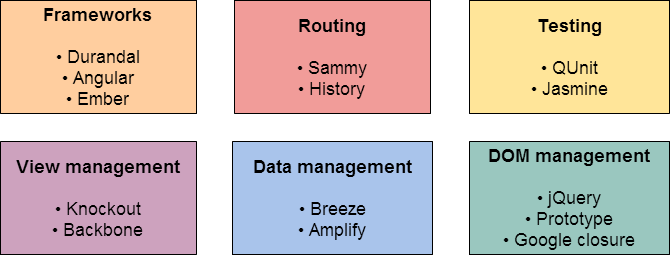

Motivation
Introduction
Examples
Architecture
Advantages and disadvantages
Tools
Demo
One of the main aspects that influence user
experience is load time.
Minimize scripts and CSS
Combine images in a single sprite
Delay JavaScript execution
Handle static files separately (CDN)
Resource cache
However, even with cache the browser must:
Re-parse and execute CSS and JavaScript code.
Download and parse the whole page HTML.
Even when only a little part changed.
Rebuild the DOM tree.
Render the UI.
To sum up, SPA is an answer to the following questions:
¿How can we achieve a more efficient behavior?
¿Can we only load what's new or necessary?
What is a SPA?
It is a new approach to building web applications.
The whole source code is either loaded initially or afterwards dynamically, without reloading the page.
Navigation is resolved on the client side.
Server calls are done asynchronously.
What is NOT a SPA
Join all webpages for the site and load them statically.
Black or white, hybrid approaches do exist.
A silver bullet: it might not be a good idea for some projects.
What can a SPA do?
Show URL changes and navigate forward and backward.
Manipulate the DOM on the client side.
Wait for the view to load before showing it.
Store previously loaded pages on the client.
GMail
Advantages
Faster and slicker UI.
Easier maintenance.
Better load distribution.
The beginning of the development process is faster.
UI is simply another client.
Great for testing.
Disadvantages
The initial load can be slow.
SEO can become complex.
Requires JavaScript to be enabled.
Requires additional JavaScript knowledge.
Other aspects
We move non-critic business logic to the client.
Our code used to be90% C#/VB and 10% JS.
Now it will be 50/50.
This isn't necessarily an advantage or disadvantage, but we will need a different set of tools to maintain good practices.
Client side development
Knockout.js
Server side development
En MVC, nuestros controladores pasan a ser ApiControllers para definir un API RESTful.
Implementamos una sola vista (layout).
No vamos a utilizar Razor para renderizar las vistas.
Vamos a ver un template para Visual Studio que trae un proyecto pre-configurado para SPA (Hot Towel SPA).